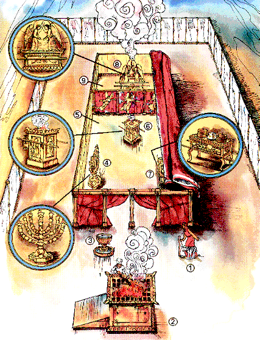

The Souls Under The Altar
The following passage in the book of Revelation is often cited in support
of the belief that people are created with an immortal soul that survives in
a conscious state after death:
Rev 6:9 And when he had opened the fifth seal, I saw under the altar the
souls of them that were slain for the word of God, and for the testimony
which they held:
Rev 6:10 And they cried with a loud voice, saying, How long, O Lord, holy
and true, dost thou not judge and avenge our blood on them that dwell on the
earth?
Rev 6:11 And white robes were given unto every one of them; and it was said
unto them, that they should rest yet for a little season, until their
fellowservants also and their brethren, that should be killed as they were,
should be fulfilled.
Here you seemingly have John the revelator observing the conscious living
immortal souls
of martyred Christians in direct conversation with the Lord. Oddly enough, though,
these "souls" are seen under an altar. Where this altar is, is not
openly stated, but the assumption by those who believe in an immortal soul
is that this altar must be in the heavenly temple of God. For example:
"(1.) Where he saw them— under the altar; at the foot of the altar
of incense, in the most holy place; he saw them in heaven, at the foot of
Christ." ― Matthew Henry's Commentary on
Revelation 6:9.
Why the martyrs are described as being "under
the altar", Matthew Henry does not really explain adequately. Obviously, if this assumption is true, the
altar of incense in heaven must be extremely large in order for thousands of martyrs to
be there. That would be a literal interpretation,
and makes about as much sense as all the dead
saints literally going to Abraham's bosom (Luke 16:22), but Revelation is a book full of symbols.
The First Martyr: Abel
As a point of reference, it will be helpful to look first at the biblical
account of the first martyr, Abel:
Gen 4:8 And Cain talked with Abel his brother: and it came to pass, when
they were in the field, that Cain rose up against Abel his brother, and slew
him.
Gen 4:9 And the LORD said unto Cain, Where is Abel thy brother? And he said,
I know not: Am I my brother's keeper?
Gen 4:10 And he said, What hast thou done? the voice of thy brother's blood
crieth unto me from the ground.
Gen 4:11 And now art thou cursed from the earth, which hath opened her mouth
to receive thy brother's blood from thy hand;
Abel's blood, not Abel himself, cried out to the Lord. Clearly this did
not happen in a literal sense. Abel's shed blood cried out from the
ground to the Lord symbolically, for justice to be done, for his
blood to be avenged, just like in Rev 6:10.
Nephesh
The book of Leviticus give us some interesting information about blood:
Lev 17:11 For the life of the flesh is in the blood: and I have given it
to you upon the altar to make an atonement for your souls: for it is the
blood that maketh an atonement for the soul.
It is the Hebrew word nephesh that gives us the key:
Lev 17:11 For the life [H5315 nephesh] of the flesh is in the blood: and
I have given it to you upon the altar to make an atonement for your souls:
[H5315 nephesh] for it is the blood that maketh an atonement for the soul
[H5315 nephesh].
The word nephesh occurs three times in that verse, and it is translated
life, souls, and soul. So it would be just as proper to
translate the verse as follows:
Lev 17:11 For the soul of the flesh is in the blood: and I have
given it to you upon the altar to make an atonement for your souls: for it
is the blood that maketh an atonement for the soul.
Nephesh, according to Strong's dictionary, also has the meaning of breath, so this is also valid:
Lev 17:11 For the breath of the flesh is in the blood: and I have
given it to you upon the altar to make an atonement for your souls: for it
is the blood that maketh an atonement for the soul.
Now as most people will probably recognize, that is a medically correct
statement. The blood carries the oxygen from the lungs throughout the body.
The body's breath is literally carried in the blood! So this verse draws a parallel
between breath, soul, and blood. They are, in effect, synonymous in this
case. Note this Messianic prophecy in Isaiah:
Isa 53:12 Therefore will I divide him a portion with the great, and he
shall divide the spoil with the strong; because he hath poured out his soul
[H5315 nephesh] unto death: and he was numbered with the transgressors; and
he bare the sin of many, and made intercession for the transgressors.
Since the life is in the blood (Lev 17:11), it was Jesus' blood that was
poured out unto death at the cross.
Psuche
The word translated "souls" in Revelation 6:9 in the Greek is
psuche, G5590 in
Strong's dictionary, which also has the meaning of life or breath. Since we have
concluded that the blood carries the life and breath in Leviticus 17:11, and
life, breath,
soul, and blood are synonymous in this case, the following is also a proper translation:
Rev 6:9 And when he had opened the fifth seal, I saw under the altar the
blood of them that were slain for the word of God, and for the testimony
which they held:
Rev 6:10 And they cried with a loud voice, saying, How long, O Lord, holy
and true, dost thou not judge and avenge our blood on them that dwell on the
earth?
Now verses 9 and 10 are coherent. It is the shed blood of the
martyrs that is seen "under the altar", not
immortal bodiless souls. Just as Abel's blood cries out symbolically for
justice to the Lord, so does the blood of the martyrs "under the altar". So,
just what does "under the altar" mean, and where is this altar. For
the answers we need to look at the altars of the Hebrew sanctuary or temple.
The Sanctuary
|  |
(9) 2nd Apartment
The Holy of Holies
(8) The Ark of the Testimony of God containing
the 10 commandments
(7) The Table of Showbread
(6) The Golden Altar
of Incense
(5) 1st Apartment
The Holy place
(4) The Golden Candlestick
(3) The Laver
(2) The Brazen Altar of Burnt Offerings
(1) The Sacrifice of the Lamb
The graphics of the sanctuary are adapted, with very
minor revision, from an illustration by Tom Dunbebin. |
In the above illustration, two altars are depicted. The altar of burnt
offerings in the outer court (2), and the altar of incense (6) in the first
apartment of the sanctuary, or holy place.
The Brazen Altar of Burnt Offering
Now again, we have determined that Revelation 6:9 refers to the blood of
Christian martyrs as being "under the altar". This expression
"under the altar" is explained by how
sacrificial blood was used in the sanctuary: Here is one example:
Lev 4:7 And the priest shall put some of the blood upon the horns of the
altar of sweet incense before the LORD, which is in the tabernacle of the
congregation; and shall pour all the blood of the bullock at the bottom of
the altar of the burnt offering, which is at the door of the tabernacle of
the congregation.
(See also: Exo 29:12, Lev 4:18, 25, 30, 34, 5:9, 8:15, 9:9)
Note that only a small amount of the blood of the sacrifice was applied to the horns (at
the top) of the altar of incense, but, most of it was poured out on
the ground at the bottom of the altar of burnt offerings. Now as Christians are aware, the
animal sacrifices of the Hebrew sanctuary were symbolic for the sacrifice
and death of the lamb of God, those sacrifices represented the crucifixion
of Jesus Christ. The animal blood poured out at the bottom of the altar of
burnt offering was symbolic of the shed blood of Jesus Christ, spilled on
the ground under the cross! Therefore, the altar of burnt
offering is symbolic of Christ's sacrifice, which occurred on this earth.
(The Laver, which was between the altar of burnt offering and the entrance
to the sanctuary, symbolically represents baptism, which is also on this
earth.)
Now note what Paul says about the saints of God:
1 Cor 12:27 Now ye are the body of Christ, and members in particular.
And note what Jesus said to Paul, then Saul, on the road to Damascus:
Acts 22:7 And I fell unto the ground, and heard a voice saying unto me,
Saul, Saul, why persecutest thou me?
Acts 22:8 And I answered, Who art thou, Lord? And he said unto me,
I am
Jesus of Nazareth, whom thou persecutest.
Saul was killing and persecuting Christians, yet Jesus accuses Saul of
persecuting Him! Then there is this, also from Jesus:
Mat 25:40 And the King shall answer and say unto
them, Verily I say unto you, Inasmuch as ye have done it unto one of the
least of these my brethren, ye have done it unto me.
So martyring Christians is spiritually like crucifying Christ anew, and
His blood was repeatedly poured out symbolically "under the alter" of burnt
sacrifice, which represented the cross, which was on this earth.
The Golden Altar of Incense
The altar of incense however,
is in the heavenly sanctuary before the throne of God:
Rev 8:1 And when he had opened the seventh seal, there was silence in
heaven about the space of half an hour.
Rev 8:2 And I saw the seven angels which stood before God; and to them were
given seven trumpets.
Rev 8:3 And another angel came and stood at the altar, having a golden
censer; and there was given unto him much incense, that he should offer it
with the prayers of all saints upon the golden altar which was before the
throne.
Rev 8:4 And the smoke of the incense, which came with the prayers of the
saints, ascended up before God out of the angel's hand.
Rev 8:5 And the angel took the censer, and filled it with fire of the altar,
and cast it into the earth: and there were voices, and thunderings, and
lightnings, and an earthquake.
However, because the golden altar of incense never had sacrificial blood
poured out under it, it is not the altar spoken of in Rev. 6:9.
Two Groups of Martyrs
Now note that there will clearly be two groups of martyrs.
Rev 6:10 And they cried with a loud voice, saying, How long, O Lord, holy
and true, dost thou not judge and avenge our blood on them that dwell on the
earth?
Rev 6:11 And white robes were given unto every one of them; and it was said
unto them, that they should rest yet for a little season, until their
fellowservants also and their brethren, that should be killed as they were,
should be fulfilled.
This
first group in Rev 6:9-11 are told they are to rest for a while until they
are joined by a second group of martyrs, which are also mentioned in
Revelation 14:
Rev 14:13 And I heard a voice from heaven saying unto me, Write, Blessed
are the dead which die in the Lord from henceforth: Yea, saith the Spirit,
that they may rest from their labours; and their works do follow them.
These Christian dead "rest" from their labors, asleep in their graves.
They are not alive as an immortal soul in heaven, A similar verse about Abel
being quite dead is found in Heb 11:4-
Heb 11:4 By faith Abel offered unto God a more excellent sacrifice than
Cain, by which he obtained witness that he was righteous, God testifying of
his gifts: and by it he being dead yet speaketh.
The Persecutor Drunken with the Blood of
the Saints
The context of Revelation 14 (Mystery Babylon and the mark of the beast),
and the following verses in Revelation 17, 19 and 20 describe the persecutor
of the saints:
Rev 17:6 And I saw the woman drunken with the blood of the saints, and
with the blood of the martyrs of Jesus: and when I saw her, I wondered with
great admiration.
Rev 19:2 For true and righteous are his judgments: for he hath judged the
great whore, which did corrupt the earth with her fornication, and hath
avenged the blood of his servants at her hand.
Rev 20:4 And I saw thrones, and they sat upon them, and judgment was
given unto them: and I saw the souls of them that were beheaded for the
witness of Jesus, and for the word of God, and which had not worshipped the
beast, neither his image, neither had received his mark upon their
foreheads, or in their hands; and they lived and reigned with Christ a
thousand years.
Interestingly enough, Revelation 17 tells us there are two phases
of the "beast" which the woman rides:
Rev 17:8 The beast that thou sawest was, and is not; and shall ascend out
of the bottomless pit, and go into perdition: and they that dwell on the
earth shall wonder, whose names were not written in the book of life from
the foundation of the world, when they behold the beast that was, and is
not, and yet is.